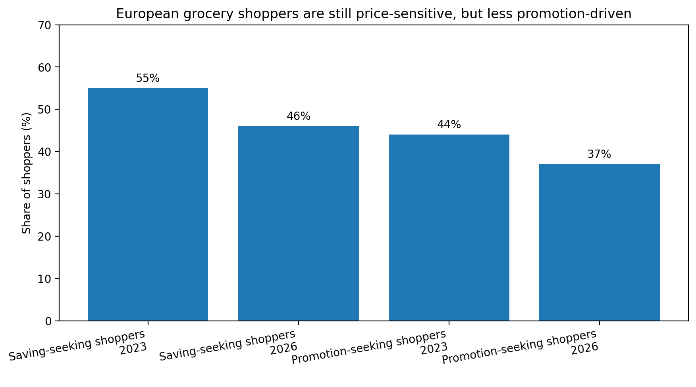

Quick commerce has always been marketed as a speed category. Groceries in 10 minutes. Snacks before the movie starts. Milk before breakfast. Medicine before the fever gets worse.
But speed is not the real business model. Speed is the promise. The real business model is repeat behavior. A q-commerce company does not win because a customer orders once during a promotion. It wins when customers build the service into their weekly rhythm. That is why the most important question in quick commerce is no longer: How fast can we deliver? It is: How do we make customers come back without paying them to come back? That is where subscriptions beat discounts.
Discounts create transactions. Subscriptions create habits.
Discounts are easy to launch because they create immediate movement. A 20% voucher can drive orders today. Free delivery can reactivate dormant users. A limited-time campaign can push GMV up for a week. In a dashboard, discounts look productive because they create visible short-term spikes.
But the problem is simple: discounts often rent demand instead of building loyalty. When a customer comes back because of a coupon, the platform has not necessarily earned a habit. It may have only bought another transaction. The next time a competitor offers a better voucher, that same customer can switch.
Subscriptions work differently. A subscription asks the customer to make a small commitment in exchange for repeated value — free delivery, lower service fees, exclusive benefits, priority support, or personalized perks. Once customers subscribe, they are more likely to consolidate future orders into the platform where they already feel they are getting value. Grocery is naturally repeatable. People do not buy food once. The product opportunity is to convert urgent convenience into routine dependency.
The market is moving from promotion pressure to value pressure
European grocery shoppers are still price-sensitive, but the pressure is changing. McKinsey's 2026 State of Grocery Retail Europe report found that the share of shoppers actively seeking ways to save money fell from 55% in 2023 to 46% in 2026, while promotion-seeking fell from 44% to 37% over the same period. The report notes that grocery remains under cost pressure, but that consumer behavior is slowly stabilizing.

That shift matters for q-commerce. Customers are not simply chasing the cheapest offer forever. They still care about value, but value is becoming broader than discounts — it includes convenience, reliability, availability, time saved, delivery confidence, and trust.
A discount says: Buy now because it is cheaper. A subscription says: Use us repeatedly because your life becomes easier. That difference is strategic.
"Discounts rent demand. Subscriptions build habit."— TheGlocalPM
The hidden danger of discount-led retention
Discounts can be useful. The issue is when they become the retention strategy. In q-commerce, discount dependency creates five compounding problems.
-
1
It trains customers to wait. Users learn that every quiet week brings a voucher, so they delay orders until the next incentive.
-
2
It damages margin. Quick commerce already carries heavy operational costs: picking, packing, rider supply, darkstore rent, refunds, and last-mile failures. A discount sits on top of that cost stack.
-
3
It attracts low-intent customers. Some users are loyal to the deal, not the service.
-
4
It makes retention metrics misleading. A reactivated user may look retained, but the business may have paid too much to bring them back.
-
5
It weakens brand differentiation. If every competitor can offer a voucher, the customer's decision becomes purely transactional.
Subscriptions solve a different problem. They do not ask, "How do we make this order cheaper?" They ask, "How do we make this platform the customer's default?"
Loyalty is becoming a grocery infrastructure layer
The strongest grocery players are not treating loyalty as a side campaign. They are embedding it into the economics of online grocery. Walmart+ members drove around two-thirds of Walmart's online food sales in April 2025. Amazon expanded same-day perishable grocery delivery for Prime members to more than 1,000 U.S. cities, with plans to reach 2,300 by end of 2025.

Subscription is not only a revenue mechanic. It is a demand aggregation tool. When customers subscribe, the platform gains more predictable usage. Predictable usage helps with forecasting, assortment, inventory placement, rider planning, and marketing efficiency. In quick commerce, that is powerful because the hardest costs are operational, not digital. The subscription becomes a bridge between the customer promise and the operating model.
In q-commerce, retention is operational, not just emotional
Traditional retention thinking focuses on CRM: better push notifications, improved email journeys, segmentation, personalized offers. That is useful but incomplete. In quick commerce, customers return because the operation performs. They return when:
- the items they want are actually available;
- delivery times are reliable;
- substitutions make sense;
- fees feel fair;
- support is fast;
- the app remembers their habits;
- the basket is easy to rebuild;
- the service saves real time.
A customer does not care which team owns the problem. If the banana is missing, the order is late, or the delivery fee feels random, the experience is broken.
The PM challenge: do not copy Amazon Prime blindly
Many companies look at Prime or Walmart+ and conclude: "We need a subscription." That is too shallow. A q-commerce subscription must be designed around the company's operating reality. If the promise is too generous, the business loses money. If the promise is too weak, customers do not subscribe. If the benefits are too generic, they fail to change behavior.
- help What behavior are we trying to increase?
- help Which customers should subscribe first?
- help Which benefits create habit, not just sign-up?
- help Which benefits are affordable at scale?
- help How do we prevent subscription users from becoming margin-negative?
- help How does the subscription improve forecasting and operational planning?
- help What is the break-even order frequency?
- help When should we use discounts versus subscription benefits?
This is where subscription design becomes a product strategy problem, not a marketing tactic.
The right metric is not subscribers. It is retained profitable frequency.
A subscription launch can look successful if many people sign up. But subscriber count is not enough. The deeper metrics are:
- subscriber repeat order frequency;
- subscriber contribution margin;
- churn after trial;
- usage of benefits;
- order frequency before and after subscription;
- basket size changes;
- delivery cost per subscriber;
- incremental orders versus cannibalized orders;
- retention by customer segment;
- payback period on acquisition.
The key phrase is retained profitable frequency. A q-commerce company does not need customers to order once with a discount. It needs customers to order repeatedly in a way the business can afford. This is why subscriptions beat discounts: they shift the retention conversation from campaign performance to customer economics.
When discounts still make sense
Discounts are not bad. They are just overused. They work best when they have a clear job.
- bolt First-order activation
- bolt Basket-building
- bolt Category trial
- bolt Win-back for a specific segment
- bolt Inventory clearance
- bolt Subscription conversion
- bolt Apology recovery after service failure
But discounts should be temporary and intentional. Instead of giving repeated free-delivery vouchers to everyone, a q-commerce platform can use a discount to convert a high-frequency user into a subscription plan. The discount becomes a bridge, not a crutch. That is the difference between promotion strategy and retention strategy.
Closing Thoughts
Quick commerce cannot discount its way to loyalty forever. The category is too operationally expensive, too competitive, and too easy for customers to switch. A voucher may win the next order, but it rarely wins the customer's routine.
Subscriptions are more powerful because they create a relationship. They give customers a reason to consolidate demand. They give companies a better signal of future behavior. And when connected to inventory, logistics, and personalization, they can improve both customer experience and operational efficiency.
The future of q-commerce retention will not be built on endless coupons. It will be built on subscription products that make customers feel: "This service is already part of how I live." That is why subscriptions beat discounts.